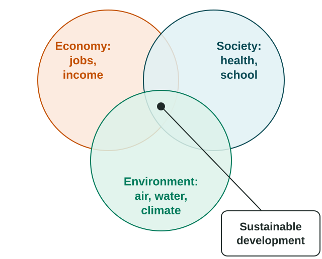

For centuries the cod off Newfoundland, Canada, seemed endless. Then large factory trawlers caught more fish each year than the stock could replace. In 1992 Canada's government closed the northern cod fishery, and about 30,000 people in Newfoundland and Labrador lost their work in fishing and fish processing. Growth that uses up the resources it depends on cannot last. This topic asks how places can develop without wrecking the environment and the future.
What sustainable development means
You met sustainability in Unit 1: using resources in ways that do not use them up or harm the environment for future generations. Sustainable development applies that idea to development: improving people's lives now, in income, health and education, without harming the ability of future generations to meet their own needs. The idea was made famous by a United Nations report, Our Common Future, in 1987. It joins three parts that must work together: the economy (jobs and income), society (health, schooling and a fair share for all) and the environment (clean air and water, forests, a stable climate).

What makes development hard to sustain
- Resource depletion. Using a resource faster than it can be replaced, like the Newfoundland cod, or groundwater pumped faster than rain refills it.
- Mass consumption. As incomes rise, people buy more goods, eat more meat, drive more and fly more, and each adds to the demand for energy and materials. Rostow's last stage, high mass consumption, is the stage that uses the most energy and materials per person.
- Pollution. Factories, cars and farms foul air, water and soil. Fast-growing industrial cities often suffer the worst air.
- Climate change. Burning fossil fuels such as coal, oil and gas adds greenhouse gases that warm the planet. The places that burned the most fossil fuels over the past two centuries are mostly core countries, while many of the places most at risk from floods, drought and rising seas are poorer ones.
This creates a real tension. Many less developed countries argue they need cheap energy, often coal, to grow, as Britain and the United States did. Others argue that the world cannot afford that path again. Both arguments are part of debates in UN climate talks, and an exam answer can explain either side without taking one.
Responses at different scales
| Scale | Response | Example |
|---|---|---|
| Global | Shared goals and agreements | The UN Sustainable Development Goals (2015) |
| National | Energy and land policy | Kenya produces a large share of its electricity from geothermal power, much of it near Lake Naivasha in the Rift Valley |
| Local | Protected areas, local projects | Community forests and ecotourism lodges in Costa Rica |
The Sustainable Development Goals
In 2015 all UN member states adopted 17 Sustainable Development Goals (SDGs), to be reached by 2030. They include no poverty (Goal 1), zero hunger (Goal 2), quality education (Goal 4), gender equality (Goal 5), clean water and sanitation (Goal 6), affordable and clean energy (Goal 7) and climate action (Goal 13). The goals link the development measures you studied in Topic 7.3 to the environment: a country is asked to raise incomes and schooling and also to cut pollution and protect forests and oceans. Progress is reported each year, and many targets are behind schedule, so check the latest UN report, with its year, before quoting progress.
Ecotourism
Ecotourism is tourism to natural areas that aims to protect the environment and benefit local people, for example by hiring local guides and limiting the number of visitors. It can turn a standing forest into a source of income, so protecting it pays more than cutting it down.
- Costa Rica has set aside a large share of its land in national parks and reserves, and visitors come for its rainforests and wildlife. Tourism has become one of its main sources of income and jobs.
- The Galápagos Islands of Ecuador charge park fees, require visitors to travel with licensed guides and limit where boats may go, to protect species found nowhere else.
Ecotourism has limits too. Flights to distant parks burn fuel; too many visitors can damage trails and disturb wildlife; and much of the money may go to tour firms based elsewhere rather than to local people. Whether ecotourism is sustainable depends on how it is managed.
Worked example: explain the degree. "To what degree is ecotourism sustainable development in Costa Rica?" Start with the degree: "To a large degree, because tourism income gives Costa Ricans a reason to keep forests standing and pays for parks and local jobs; however, the flights tourists take add to climate change, so it is not fully sustainable."